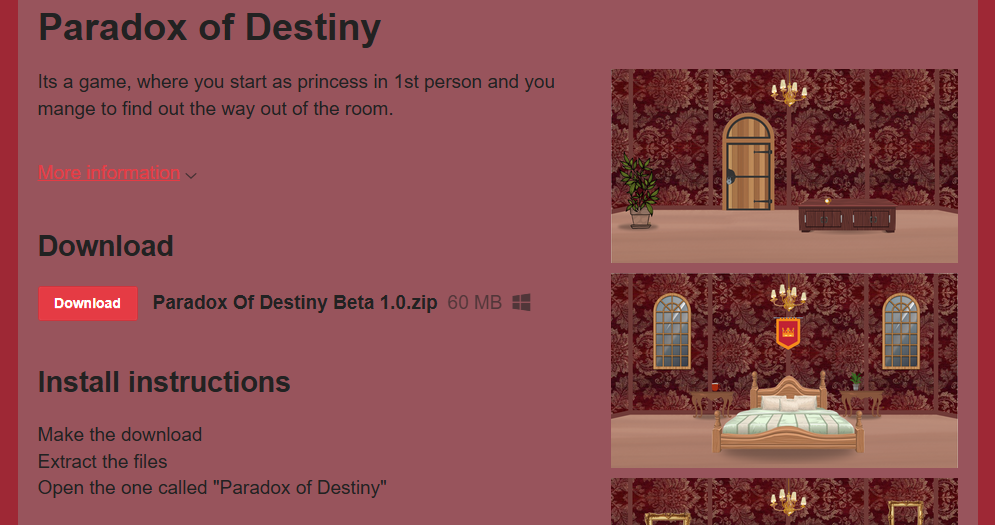
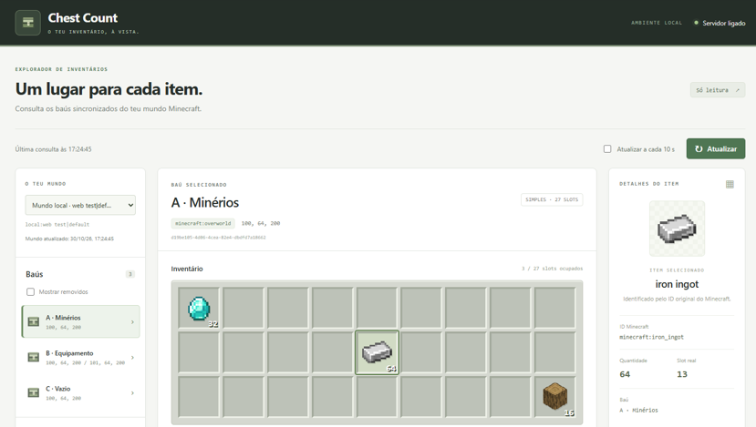

Programação
C, C#, PHP, HTML, CSS, JavaScript e SQL.
Maior confiança em C e desenvolvimento de lógica.Portefólio · Competências
Estudante de Programação de Sistemas de Informação, interessado em desenvolvimento de videojogos, criação de software e na forma como os sistemas funcionam.
Finalista do CTeSP de Programação.
À procura de oportunidades profissionais em Leiria.
Um pouco sobre mim
Entrei na informática porque queria aprender algo que ainda não dominava. Essa curiosidade acabou por se transformar numa área que quero continuar a explorar.
Gosto de perceber como os sistemas funcionam, investigar problemas e transformar ideias em projetos. Tenho especial interesse no desenvolvimento de videojogos, mas também me interesso por desenvolvimento web e tecnologias de informação.
Considero-me comunicativo, persistente e comprometido com a melhoria contínua. Trabalho melhor quando tenho contexto e objetivos claros, e valorizo ambientes onde exista espaço para aprender e colaborar.
O que trago
C, C#, PHP, HTML, CSS, JavaScript e SQL.
Maior confiança em C e desenvolvimento de lógica.QA · ISTQB · Planeamento e Design · Testes e Bugs · Gestão de Tráfego Digital · PC Troubleshooting.
Competências adquiridas através de formação e experiência prática.Git · GitHub · Visual Studio · VS Code · Figma · Unity · Canva.
Utilização em projetos pessoais e académicos.Comunicação · Curiosidade · Criatividade · Persistência.
Gosto de investigar, documentar e compreender sistemas.As competências apresentadas refletem o meu nível atual e estão em constante evolução.
Trabalho realizado

Jogo 2D de exploração e puzzles, desenvolvido individualmente em Unity. Fiquei responsável por todo o processo: conceito, planeamento, design, programação, testes e publicação.
Ver projeto ↗
Projeto académico desenvolvido em grupo: uma solução para gerir e consultar o inventário de baús de mundos Minecraft. Participo no planeamento, definição da ideia, design e apoio ao desenvolvimento web e Android.
Projeto académico — ainda não publicado.
Percurso profissional
Testes de software, identificação de erros, correção de bugs e atividades de Quality Assurance.
Estágio de três meses em Cracóvia, Polónia.Utilização do backoffice da empresa, gestão de produtos e gestão de redes sociais.
Dois meses de estágio, com 200 horas.Arbitragem e marcação das competições da Federação de Ju-Jitsu e Disciplinas Associadas de Portugal.
Categorias de Duo System e Fight System.Participação em trabalhos de escavação, limpeza do local, categorização, conservação de materiais e reconstrução.
Atividade realizada durante cinco anos, no verão.Autoconhecimento
Uma visão breve dos fatores que influenciam o meu desenvolvimento profissional.
Comunicação, criatividade e geração de ideias, curiosidade, persistência e compromisso com a melhoria contínua.
Gestão do foco, retoma de tarefas após interrupções, interpretação de informação escrita e organização de vários prazos em simultâneo.
Rede de contactos académica, mobilidade, aprendizagem de novas tecnologias e evolução dos projetos pessoais e académicos.
Contextos de pressão constante, comunicação pouco clara, excesso de tarefas simultâneas e ambientes sem condições de acessibilidade adequadas.
Esta análise apresenta aspetos relevantes para o meu desenvolvimento profissional, sem expor informação pessoal desnecessária.
Percurso académico
Intituto Pólitecnico de Leiria · Escola Superior de Téclonogia e Gestão
Finalista.ETP Sicó · Formação profissional.
Curso de três anos, com 600 horas de estágio.Subido · Pedro Sobral
Formação de sete dias.Português — nativo · Inglês — C1 · Espanhol — B2 · Polaco — A2 · Alemão — em aprendizagem.
Vamos conversar
Estou disponível para conversar sobre estágios, trabalho, projetos e oportunidades nas áreas de desenvolvimento de videojogos, web e tecnologias de informação.
Disponibilizo aqui o meu currículo, certificados e outros documentos relevantes.